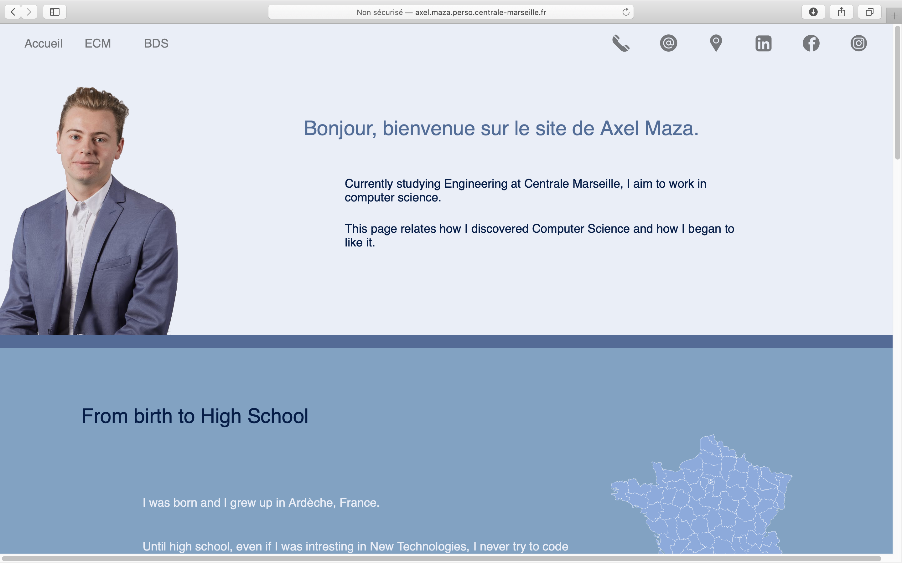
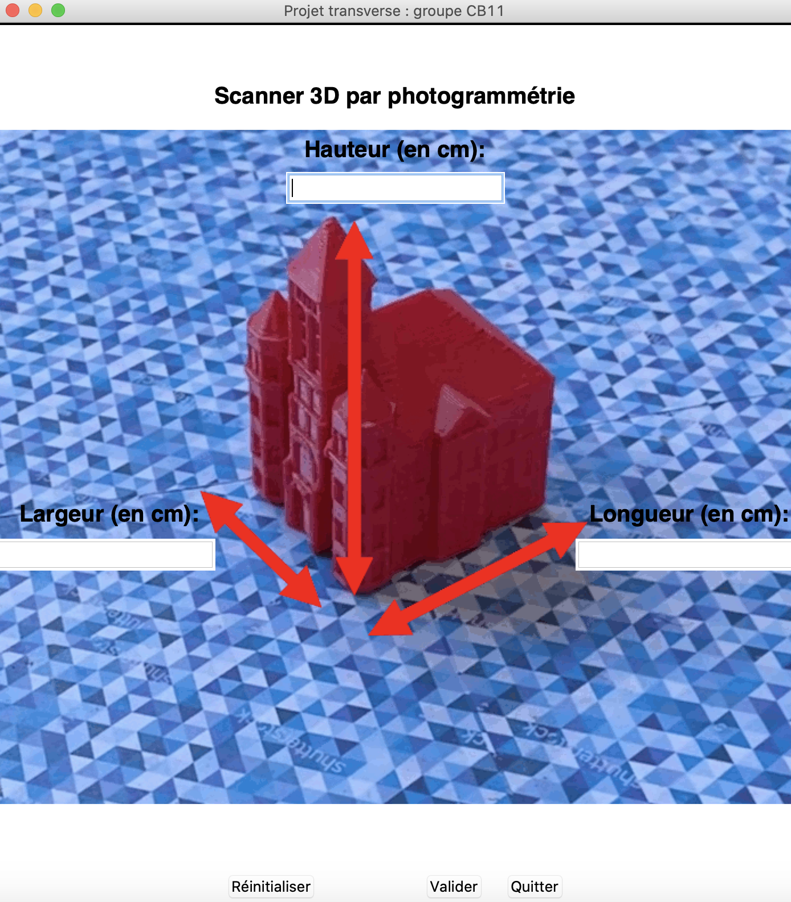
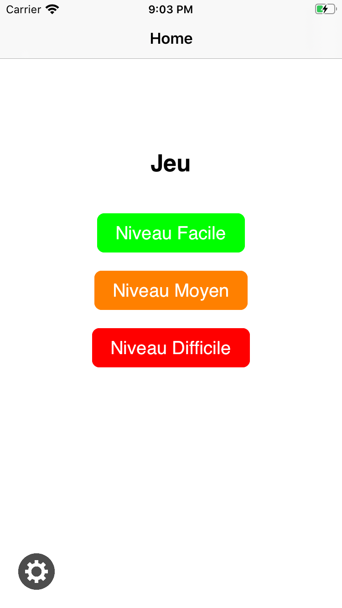
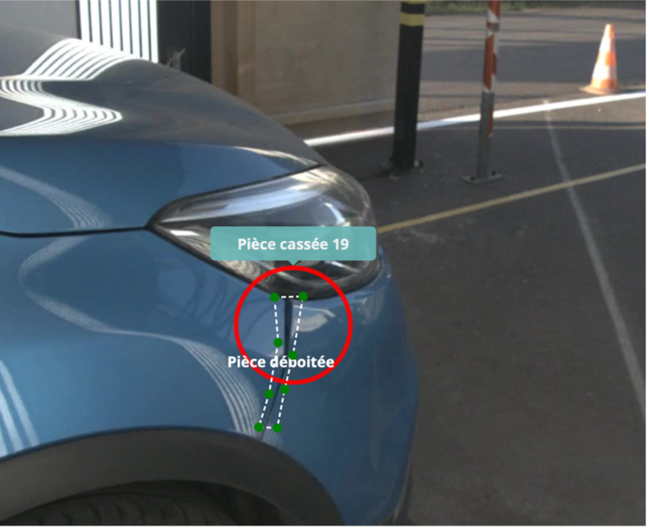
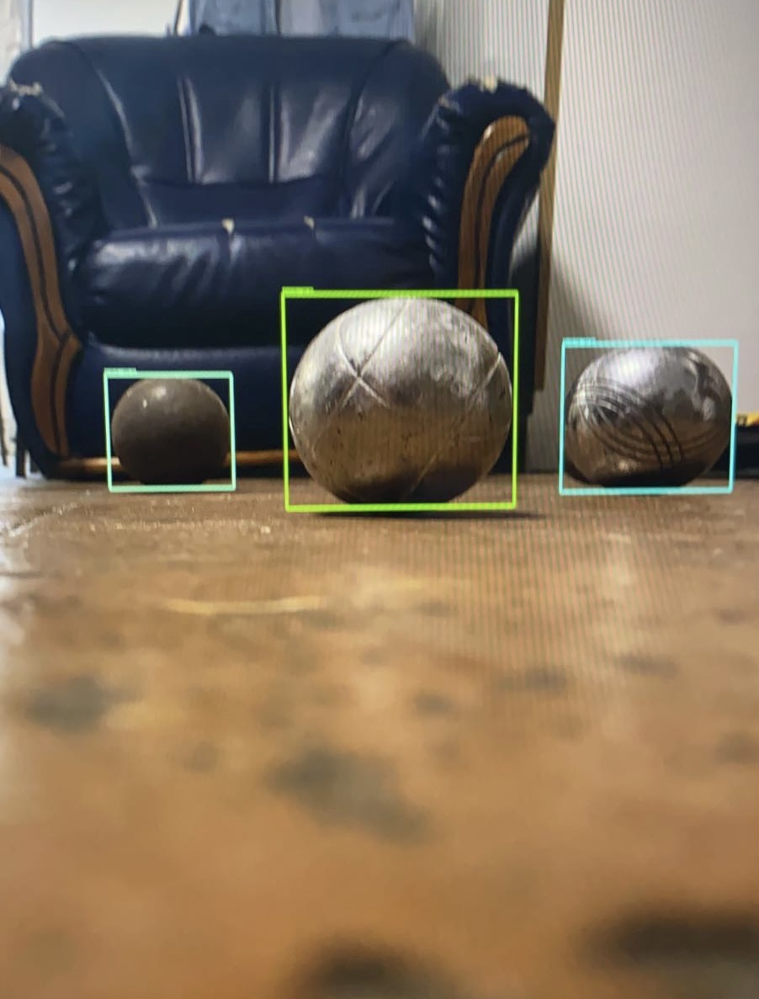
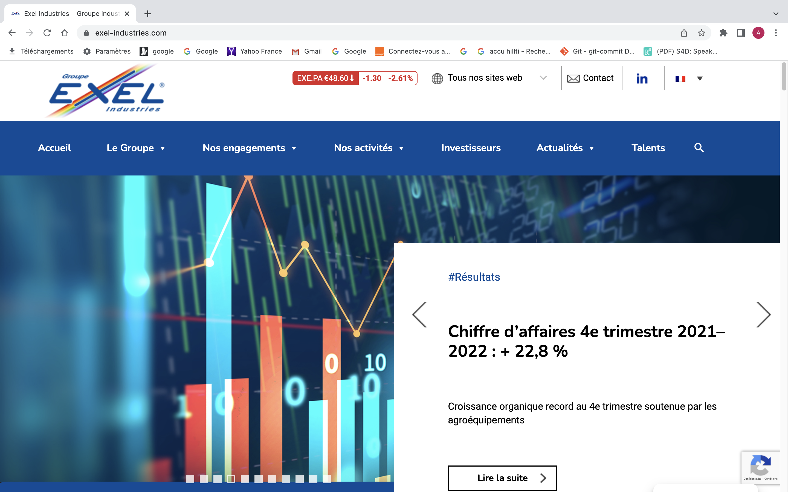
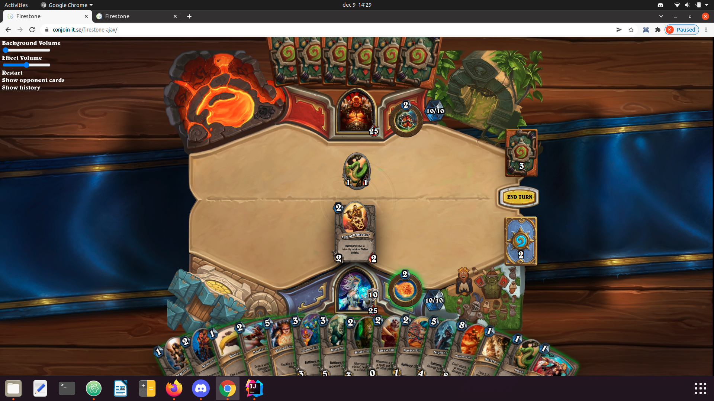
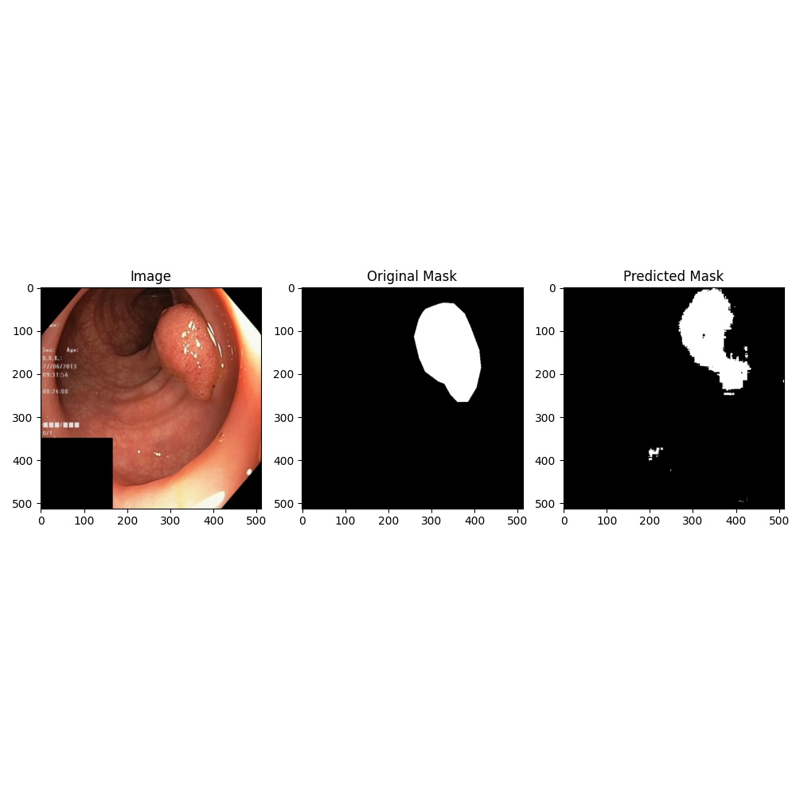
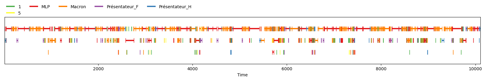

I just finished my double degree Centrale Marseille - KTH which gave me both specific and general skills.
Passionate about data and AI but still a jack-of-all-trades, this site explains how I got to where I am today in the IT field.
From birth to High School
I was born and I grew up in Ardèche, France.
Until high school, even if I was interested in new technologies, I never tried to code anything.
During High School
My Projects
I became interested in computer science in high school because my cousin was an IOS developer.
Greenfoot: Java
I began working on mini-games thanks to
Greenfoot
.
I liked to stop following the tuto and modify the games to make my own rules.
It was my first project of computer science and my first approach of Java.
Robobox: C++
Then my cousin who was glad that I like her occupation subscribed me to
Robobox
to me.
So during 6 months I received some parts of robots to create and program at home.
I learned C++ and especially Arduino language.
My Project:
TIPE
During CPGE
(Preparatory Classes)
While I was in CPGE, computer science was my favorite subject.
I improved my skills in Computer Science thanks to a project: the
TIPE
.
Edge detection: Python
The goal of my project was to read automatically a licence plate with just one picture of the car.
I had all along the year a very 'autonomous' approach: I didn't only want to use an already efficient algorithm but to learn the image processing by myself.
Image processing: Python
This project dealt with pictures so I acquired some skills about image processing.
I also discovered how to improove my algorithms thanks to data using genetical algorithm.
This was an opportunity for me to apply my SQL courses to a larger project.
My Projects:
During my first year at Centrale Marseille
During the first year at Centrale Marseille, courses are very general in all fields.
However, I have improved my skills during non-school activities.
My web site: HTML/CSS

At the beginning of the year I discovered web development thanks to Ginfo: the Computer Science association of the School.
I learned basis of HTML and CSS in order to create my own web site.
I improved and 'finished' this website during the COVID-19 lockdown.
Transverse Project: Adruino
Then, I increased my skills on my own. I worked on different things for a project over the whole year: the transverse project.
With my team of 10 people we had to create a device to allow people of the school to scan their object thanks to photogrammetry.
I participated in the creation of the arduino engine control with a classmate.
Transverse Project: Python

I also used my python skills to create a user interface using Tkinter to allow the user to run a scan with the correct object size.
Transverse Project: Swift

Finally, I typed my first lines of Swift to create an IOS application to automate photo taking.
I was curious to discover IOS development and I was able to create simple applications to learn this way of programming but unfortunately I didn't have time to finish the photo application before the end of the project.
My Projects:
During my second year at Centrale Marseille
During my second year at Centrale, I followed the MIE course (Maths, Info, Eco) which is very general.
I fed my curiosity with activities beyond school again
First internship: Python
Detection of damage on car bodies

Just before the beginning of my second year, I did my first year internship called "internship worker".
I completed this internship in a Marseille-based start-up that used artificial intelligence to detect damage on a car body.
I was the assistant of the AI engineer and my role was to analyze the dataset that was evolving in real time as well as the results of the different models.
I could thus discover the world of entrepreneurship as well as AI by initiating myself to Tensorflow at the very release of Tensorflow 2.0.
Kit-tient: Python
Detection of petanque balls

As I liked both entrepreneurship and AI, I then, during my second year, carried out an entrepreneurship apprenticeship.
So with a friend of mine we started to work on the kit-tient: a device allowing to know automatically to whom is the point in the game of petanque.
If the goal of the work-study program was rather to discover the functioning of this world with a project than to technically realize this project, I nevertheless took advantage of this project to apply what I had learned during my internship.
So I fine-tuned an object detection model to adapt it to the detection of petanque balls by classifying them "by player". This allowed me to use Tensorflow by myself.
Second internship: HTML/CSS
Web development

If I was already sure that I wanted to do computer science, I still had doubts, before leaving for a double degree, about the specialty I wanted to discover in more depth.
So I did a second internship at the end of the second year totally different: in the web development field.
My main mission was to create the pages of a client's website.
If I enjoyed discovering the front end (HTML-CSS) and this is still very useful to me. I knew through this internship that I would rather discover more about AI than about web development..
My Projects:
During my double degree at KTH
To specialize, I did a double degree. I did a master in computer science at KTH (Stockholm).
I had both very interesting theoretical courses, "small" Labs but also bigger projects to apply our knowledge.
Software Course: Clojure

I attended a Large-Scale Software Development course whose goal was to learn how to program with several people using functional languages (Clojure).
The course included a main project whose final goal was to redevelop the back of the hearstone game by implementing new cards regularly.
So we recreated this game using an agile method in groups of 3 students, implementing new features in each sprint.
Deep Learning Course: Python

I also had a lot of Artificial Intelligence courses and so for example a Deep Learning course.
In this course we have, in groups of 3, trained a model to perform a segmentation of medical images.
We were able to experiment the implementation of a model with Pytorch but also the use of data augmentation.
Master Thesis: Python

I finished this double degree with a master thesis for which I did an internship with two distinct goals.
An industrial goal: I participated in the creation of an automated presidential debate analysis tool for my company (Lincoln).
An academic goal: during this project I focused on studying, improving, testing, and comparing speaker detection algorithms.
So I was able to perfect my python by still using AI libraries like pytorch or pyannote. I was also able to practice "enterprise" code using git for example.